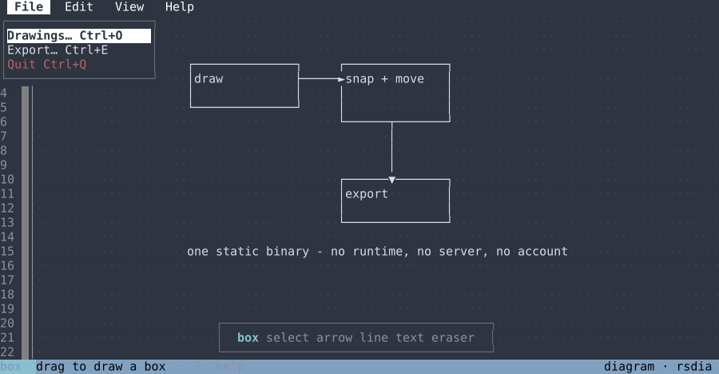
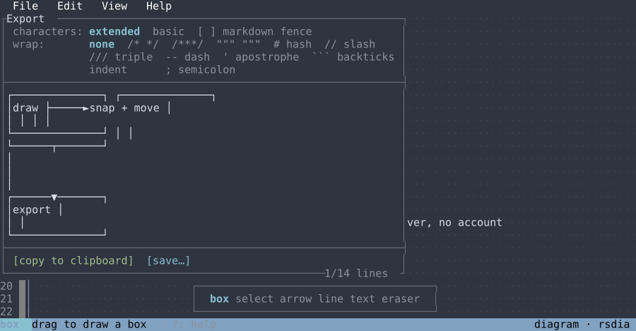
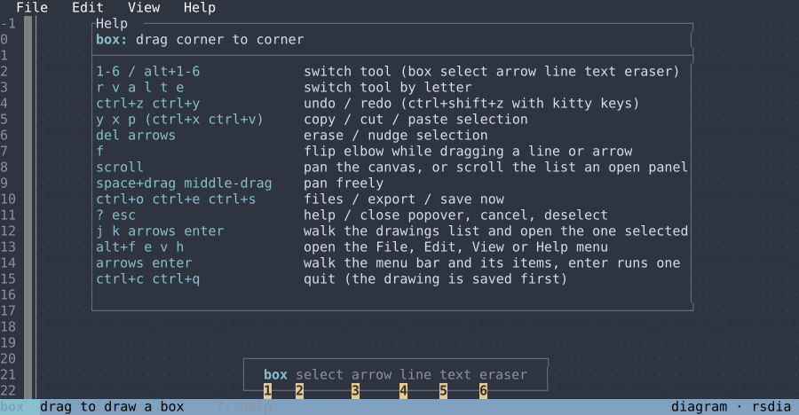

copy, cut, paste a selection; arrows nudge it, del erases it
ctrl+soe
save, drawings list, export panel
alt+f e v h
the menus, walked with the arrows and enter
?esc
help, and close, cancel or deselect
ctrl+c
quit; the drawing is saved first

Menus, mouse or keyboard

The export panel, previewing the text

Every shortcut, in the app
Where it keeps things
Drawings are .rd.json under ~/.local/share/rsdia,
settings under ~/.config/rsdia, and they autosave. In tmux
set set -g mouse on; on macOS use the bare digits instead of
alt+digit.